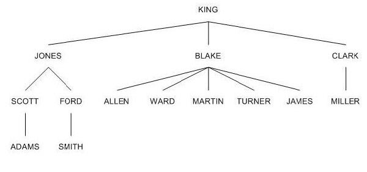
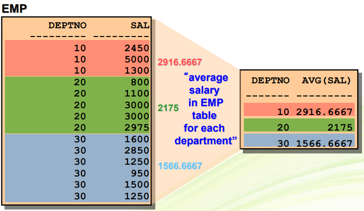

Sub Query - 서브쿼리
Sub Query
1. 서브 쿼리의 개념
Sub Query
Sub Query는 단일행 서브쿼리 ; 서브쿼리의 결과가 단일 행
단일 행 연산자 : =, >, >=, <, <=, <>
다중행 서브쿼리 ; 서브쿼리의 결과가 2개 이상의 행
복수 행 연산자 : IN, NOT IN, ANY, SOME, ALL, EXISTS
SCOTT의 부서명을 알아내기 위한 서브 쿼리문부터 살펴보자.
SELECT dname FROM dept
WHERE deptno = (SELECT deptno FROM emp WHERE ename=’SCOTT’);
-- ( )부분 : 서브쿼리
(1) 서브 쿼리는 하나의 SELECT 문장의 절 안에 포함된 또 하나의 SELECT 문장입니다.
(2) 그렇기에 서브 쿼리를 포함하고 있는 쿼리문을 메인 쿼리, 포함된 또 하나의 쿼리를 서브 쿼리라 합니다.
(3) 서브 쿼리는 비교 연산자의 오른쪽에 기술하고 반드시 괄호로 둘러 쌓아야 합니다.
(4) 서브 쿼리는 메인 쿼리가 실행되기 이전에 한번만 실행이 됩니다
2. 단일행 서브쿼리
(1) 단일 행(Single Row) 서브 쿼리는 수행 결과가 오직 하나의 로우(행, row)만을 반환하는 서브 쿼리를 갖는 것을 말합니다.
(2) 단일 행 서브 쿼리문에서는 이렇게 오직 하나의 로우(행, row)로 반환되는
서브 쿼리의 결과는 메인 쿼리에 보내게 되는데 메인 쿼리의 WHERE 절에서는
단일 행 비교 연산자인 =, >, >=, <, <=, <>를 사용해야 합니다
(3) 예시 : 회사에서 급여를 가장 많이 받는 사람의 이름과 급여를 알고 싶다면
SELECT ename, MAX(sal) FROM emp; -- 에러
SELECT ename, MAX(sal) FROM emp GROUP BY ename; -- 다 찍혀
SELECT MAX(sal) FROM emp;
SELECT ename, sal FROM emp WHERE sal=(SELECT MAX(sal) FROM emp);--서브쿼리
(4) 탄탄 다지기
SCOTT과 같은 부서에서 근무하는 사원의 이름과 부서번호를 출력
SELECT E2.ENAME, E2.DEPTNO FROM EMP E1, EMP E2 WHERE E1.ENAME='SCOTT' AND E1.DEPTNO=E2.DEPTNO;. –- Self Join이용하여 이름과 부서번호 출력
SELECT E2.ENAME, DNAME FROM EMP E1, EMP E2, DEPT WHERE E1.ENAME='SCOTT' AND E1.DEPTNO=E2.DEPTNO AND DEPT.DEPTNO=E1.DEPTNO; -- Self Join이용하여 이름과 부서명 출력
SELECT ENAME, DEPTNO FROM EMP WHERE DEPTNO=(SELECT DEPTNO FROM EMP WHERE ENAME='SCOTT'); -- 서브 쿼리 이용하여 이름과 부서번호 출력
SELECT ENAME, DNAME FROM EMP E, DEPT D WHERE E.DEPTNO=D.DEPTNO AND E.DEPTNO=(SELECT DEPTNO FROM EMP WHERE ENAME='SCOTT'); -- 서브쿼리 이용하여 이름과 부서명 출력
‘SCOTT’와 같은 부서에 근무하는 사원들의 급여 총합을 출력
SELECT SUM(SAL) FROM EMP WHERE DEPTNO=(SELECT DEPTNO FROM EMP WHERE ENAME=’SCOTT’);
SCOTT과 동일한 JOB을 가진 사원의 모든 정보를 출력
SELECT * FROM EMP WHERE JOB=(SELECT JOB FROM EMP WHERE ENAME='SCOTT');
SCOTT의 급여와 동일하거나 더 많이 받는 사원명과 급여를 출력
SELECT ENAME, SAL FROM EMP WHERE SAL>=(SELECT SAL FROM EMP WHERE ENAME='SCOTT');
DALLAS에서 근무하는 사원의 이름, 부서번호를 출력
SELECT ENAME, DEPTNO FROM EMP WHERE DEPTNO=(SELECT DEPTNO FROM DEPT WHERE LOC='DALLAS');
SELECT ENAME, E.DEPTNO FROM EMP E, DEPT D WHERE E.DEPTNO=D.DEPTNO AND LOC='DALLAS'; -- join을 이용해도 된다
SALES 부서에서 근무하는 모든 사원의 이름과 급여를 출력
SELECT ENAME, SAL FROM EMP WHERE DEPTNO=(SELECT DEPTNO FROM DEPT WHERE DNAME='SALES');
SELECT ENAME, SAL FROM EMP E, DEPT D WHERE E.DEPTNO=D.DEPTNO AND DNAME='SALES'; -- join을 이용해도 된다
직속상관이 KING인 사원의 이름과 급여를 출력
SELECT ENAME, SAL FROM EMP WHERE MGR=(SELECT EMPNO FROM EMP WHERE ENAME='KING');
SELECT W.ENAME, W.SAL
FROM EMP W, EMP M
WHERE W.MGR=M.EMPNO AND M.ENAME='KING';
(5) 서브 쿼리에서 그룹함수의 사용
사원들의 평균 급여 이하를 받는 사원의 사원번호와 이름, 급여를 출력
SELECT EMPNO, ENAME, SAL FROM EMP WHERE SAL<=(SELECT AVG(SAL) FROM EMP);
(6) 다중열 서브쿼리도 가능하나 단일행 서브쿼리에서는 쓸 일이 거의 없다
부서번호가 30이고 JOB이 ‘MANAGER’인 사원의 사번, 이름, 급여를 출력
SELECT EMPNO, ENAME, SAL FROM EMP WHERE (SAL, JOB) = (SELECT SAL, JOB FROM EMP WHERE DEPTNO=30 AND JOB='MANAGER'); -- 그러나 아래와 같이 간단하게 사용하지
SELECT EMPNO, ENAME, SAL FROM EMP WHERE DEPTNO=30 AND JOB='MANAGER';
3. 다중행 서브쿼리
(1) 다중 행 서브 쿼리는 서브쿼리에서 반환되는 결과가 하나 이상의 행일 때 사용하는 서브 쿼리입니다.
다중 행 서브 쿼리는 반드시 다중 행 연산자(Multiple Row Operator)와 함께 사용해야 합니다.
(2) 다중행 연산자의 종류
IN : 메인 쿼리의 비교 조건(‘=’ 연산자로 비교할 경우)이 서브 쿼리의 결과 중에서 하나라도 일치하면 참
ANY, SOME : 메인 쿼리의 비교 조건이 서브 쿼리의 검색 결과와 하나 이상이 일치하면 참
ALL : 메인 쿼리의 비교 조건이 서브 쿼리의 검색 결과와 모든 값이 일치하면 참
EXISTS : 메인 쿼리의 비교 조건이 서브 쿼리의 결과 중에서 만족하는 값이 하나라도 존재하면 참
(3) 예제
IN ; (EX) 급여가 3000 이상 받는 사원이 소속된 부서(10번, 20번)와 동일한 부서에서 근무하는 사원들의 모든 정보를 출력하는 SQL문
급여가 3000이상 받는 사원들이 소속된 부서를 출력하기 위해서는
SELECT DEPTNO FROM EMP WHERE SAL>=3000;
이라는 SQL문을 작성하므로 위의 예제에 맞는 SQL문은
SELECT * FROM EMP WHERE DEPTNO=(SELECT DEPTNO FROM EMP WHERE SAL>=3000);
라고 생각되지만 서브쿼리의 결과가 2개 이상의 행이 리턴 되어 에러를 만난다.
=, >, >=, <, <=, <>은 단일행 서브쿼리문에서 함께 사용되는 단일행 비교연산자이다.
결과가 2행이상 구해지는 서브쿼리문에서는 다중행 연산자와 함께 사용해야 한다.
SELECT * FROM EMP WHERE DEPTNO IN (SELECT DEPTNO FROM EMP WHERE SAL>=3000);
다중 열 서브쿼리도 가능하다.
부서코드가 30이면서 커미션이 NULL이 아닌 사원의 사번, 급여, 부서코드를 출력하는 예제
SELECT empno, sal, deptno FROM emp WHERE (sal, deptno) IN (SELECT sal, deptno FROM emp WHERE deptno=30 AND comm IS NOT NULL);
JOB(직책별)로 가장 낮은 연봉을 받는 사람의 이름, 직책, 연봉을 출력
SELECT ENAME, JOB, SAL FROM EMP WHERE (JOB, SAL) IN (SELECT JOB, MIN(SAL) FROM EMP GROUP BY JOB);
ALL (EX) 30번 소속 사원들 중에서 급여를 가장 많이 받는 사원보다 더 많은 급여를 받는 사람의 이름, 급여를 출력하는 SQL문
SELECT ENAME, SAL FROM EMP WHERE SAL > ALL(SELECT SAL FROM EMP WHERE DEPTNO=30);
-- SELECT SAL SAL FROM EMP WHERE DEPTNO=30; 의 모든값보다 큰
ANY : ANY 조건은 메인 쿼리의 비교 조건이 서브 쿼리의 검색 결과와 하나 이상만 일치하면 참.
ANY는 찾아진 값에 대해서 하나라도 크면 참이 되는 셈이 됩니다.
그러므로 찾아진 값 중에서 가장 작은 값 즉, 최소값 보다 크면 참
ANY (EX) 부서번호가 30번인 사원들의 급여 중 가장 작은 값(950)보다 많은 급여를 받는 사원의 이름, 급여를 출력하는 SQL문
SELECT ENAME, SAL FROM EMP WHERE SAL> ANY (SELECT SAL FROM EMP WHERE DEPTNO=30);
EXISTS : SQL문에서 Exists를 사용하는 것은 어떤 조건을 만족하는 집합의 존재 여부를 확인할 경우에 사용 (EX) 직속부하가 있는 사원의 사원번호, 이름, 급여를 출력
SELECT EMPNO, ENAME FROM EMP WHERE EMPNO IN (SELECT MGR FROM EMP);
SELECT empno, ename, sal FROM EMP manager
WHERE EXISTS (SELECT empno FROM EMP worker WHERE manager.empno=worker.mgr);
SELECT empno, ename, sal FROM EMP manager
WHERE EXISTS (SELECT empno FROM EMP WHERE manager.empno=mgr);

3. HAVING 조건
(1) 그룹함수를 쓰되 어떤 컬럼 값을 기준으로 그룹함수를 적용할 경우 GROUP BY 절 뒤에 해당 컬럼을 기술하면 됩니다
(2) 형식 : SELECT 컬럼명, 그룹함수
FROM 테이블명
WHERE 조건(연산자)
GROUP BY 컬럼명;
(3) 합계, 평균, 최대값이나 최소값 등을 어떤 칼럼을 기준으로 그 칼럼의 값 별로 보고자 할 때 GROUP BY 절 뒤에 해당 칼럼을 기술하면 됩니다.
(4) GROUP BY 절을 사용할 때 주의할 점은 GROUP BY 절 다음에는 칼럼의 별칭을 사용할 수 없고, 반드시 칼럼명을 기술해야 한다는 점입니다.
SELECT DEPTNO FROM EMP GROUP BY DEPTNO;
사원 테이블을 부서번호로 그룹 지어 본다.
SELECT DEPTNO, AVG(SAL) FROM EMP GROUP BY DEPTNO; --부서별 급여 평균

SELECT DEPTNO 부서, AVG(SAL) FROM EMP GROUP BY 부서;
SELECT DEPTNO, MAX(SAL), MIN(SAL) FROM EMP GROUP BY DEPTNO;
SELECT DEPTNO, COUNT(*), COUNT(COMM) FROM EMP GROUP BY DEPTNO;
(cf) SELECT DEPTNO, COMM FROM EMP ORDER BY DEPTNO;
부서별 사원수와 커미션을 받는 사원수를 계산.
SELECT DEPTNO, COUNT(*), COUNT(COMM)
FROM EMP
GROUP BY DEPTNO;
특정 칼럼을 기준으로 테이블에 존재하는 행들을 그룹별로 구분하기 위해서는 GROUP BY 를 사용한다.
부서명별로 평균급여를 검색하시오.
SELECT DEPTNO, TRUNC(AVG(SAL))
FROM EMP
GROUP BY DEPTNO
ORDER BY DEPTNO;
3. HAVING 조건
SELECT column, group_function
FROM table
[WHERE condition]
[GROUP BY group_by_expression]
[HAVING group_condition]
[ORDER BY column] ;
(1) SELECT 절에 조건을 사용하여 결과를 제한할 때는 WHERE 절을 사용하지만 그룹의 결과를 제한할 때에는 HAVING 절을 사용한다.
(2) HAVING 절은 GROUP BY 절 앞에 기술 가능하지만 GROUP BY 절 다음에 기술하는 것이 논리적으로 권장되고 있다.
HAVING 절이 SELECT 절에 있는 그룹에 적용되기 전에 그룹이 구성된다.
(3) 예를 들어, 설명하자면 부서별로 그룹 은 후(GROUP BY), 그룹 지어진 부서별 평균 급여가 2000이상인(HAVING)
부서번호와 부서별 평균 급여를 출력하는 경우 다음과 같이 HAVING을 이용한다
SELECT DEPTNO, AVG(SAL)
FROM EMP
GROUP BY DEPTNO
HAVING AVG(SAL) >= 2000;
부서의 최대값과 최소값을 구하되 최대 급여가 2900이상인 부서만 출력합니다.
SELECT DEPTNO, MAX(SAL), MIN(SAL)
FROM EMP
GROUP BY DEPTNO
HAVING MAX(SAL) > 2900;
4. 피벗 테이블
(1) GROUP BY 이용한 예
SELECT DEPTNO, JOB, SUM(SAL) FROM EMP GROUP BY DEPTNO, JOB;
(2) 피벗 테이블 이용한 예
1단계 : 원본 테이블에서 피벗 테이블의 가로줄 컬럼을 DECODE를 이용하여 분류한다.
SELECT deptno, DECODE(job, 'CLERK', sal, 0) CLERK,
DECODE(job, 'MANAGER', sal, 0) MANAGER,
DECODE(job, 'PRESIDENT', sal, 0) PRESIDENT,
DECODE(job, 'ANALYST', sal, 0) ANALYST,
DECODE(job, 'SALESMAN', sal, 0) SALESMAN
FROM EMP;
2단계 : GROUP BY를 이용하여 부서별로 그룹화한다.
SELECT deptno, SUM(DECODE(job, 'CLERK', sal, 0)) CLERK,
SUM(DECODE(job, 'MANAGER', sal, 0)) MANAGER,
SUM(DECODE(job, 'PRESIDENT', sal, 0)) PRESIDENT,
SUM(DECODE(job, 'ANALYST', sal, 0)) ANALYST,
SUM(DECODE(job, 'SALESMAN', sal, 0)) SALESMAN
FROM EMP GROUP BY deptno;
3단계 : 마지막으로 맨 마지막 줄에 job별 합계와 전체 급여 총합을 추가하면 다음과 같다.
SELECT deptno, SUM(DECODE(job, 'CLERK', sal,0)) CLERK,
SUM(DECODE(job, 'MANAGER', sal,0)) MANAGER,
SUM(DECODE(job, 'PRESIDENT', sal,0)) PRESIDENT,
SUM(DECODE(job, 'ANALYST', sal,0)) ANALYST,
SUM(DECODE(job, 'SALESMAN', sal,0)) SALESMAN,
SUM(sal) "소계"
FROM EMP
GROUP BY ROLLUP(deptno);
(3) 결과 집합 내에 집계 값 생성
ROLLUP 연산자와 함께 GROUP BY 절 사용.
그룹 값을 요약하여 출력.
SELECT deptno, SUM(sal) FROM emp GROUP BY deptno;
SELECT deptno, SUM(sal) FROM emp GROUP BY ROLLUP(deptno);
복수개의 컬럼에 대한 ROLLUP
SELECT deptno, job, sum(sal) FROM emp GROUP BY ROLLUP(deptno, job);
ROLLUP을 이용한 또 다른 집합 함수 ; 합이 아닌 평균도 가능
SELECT deptno, job, avg(sal) FROM emp GROUP BY ROLLUP(deptno, job);
SELECT deptno, job, trunc(avg(sal)) FROM emp GROUP BY ROLLUP(deptno, job);
※ Guidelines
(1) SELECT 절에 그룹함수에 포함된다면 GROUP BY 절에 각각의 열이 명시되어야 한다.
(2) WHERE 절을 사용하여 행을 그룹으로 나누기 전에 행을 제외한다
(3) 그룹에 대한 조건은 HAVING 절을 사용한다(그룹에 대한 조건을 WHERE절에서 기술 불가)
(4) GROUP BY 절에 열을 포함한다(열의 별칭은 사용할 수 없다)
(5) DEFAULT는 GROUP BY 절 다음에 기술된 순서로 오름차순으로 정렬되지만 ORDER BY 절을 이용하여 변경가능하다
Total Example - 오늘의 예제
--(1) 사원 테이블에서 인원수,최대 급여,최소 급여,급여의 합을 계산하여 출력하는 SELECT 문장을 작성하여라.
SELECT COUNT(ENAME), MAX(SAL), MIN(SAL), SUM(SAL)
FROM EMP;
--(2) 사원테이블에서 업무별 인원수를 구하여 출력하는 SELECT 문장을 작성하여라.
SELECT JOB, COUNT(ENAME)
FROM EMP
GROUP BY JOB;
--(3) 사원테이블에서 최고 급여와 최소 급여의 차이는 얼마인가 출력하는 SELECT문장을 작성하여라.
SELECT (MAX(SAL) - MIN(SAL)) "급여차이"
FROM EMP;
--(4) 각 부서별로 인원수, 급여 평균, 최저 급여, 최고 급여, 급여의 합을 출력하되 급여의 합이 많은 순으로 출력하라.
SELECT COUNT(ENAME), TRUNC(AVG(SAL)), MIN(SAL), MAX(SAL), SUM(SAL) "SALTOTAL"
FROM EMP
GROUP BY DEPTNO
ORDER BY SALTOTAL DESC;
--(5) 부서별, 업무별 그룹하여 결과를 부서번호, 업무, 인원수, 급여의 평균, 급여의 합을 구하여 출력하라
(출력결과는 부서번호, 업무순으로 오름차순 정렬)
SELECT DEPTNO, JOB, COUNT(*), AVG(SAL), SUM(SAL)
FROM EMP
GROUP BY DEPTNO, JOB
ORDER BY DEPTNO, JOB;
--(6) 업무별, 부서별 그룹하여 결과를 부서번호, 업무, 인원수, 급여의 평균, 급여의 합을 구하여 출력하라.
(출력결과는 업무순, 부서번호 순 오름차순 정렬)
SELECT DEPTNO, JOB, COUNT(*), AVG(SAL), SUM(SAL)
FROM EMP
GROUP BY JOB, DEPTNO
ORDER BY JOB, DEPTNO;
-- 3 HAVING 절 : 그룹의 대한 조건절을 정의 할때 쓰는 예약어.
-- 업무별 인원수를 구하여 인원수가 3명이상인 업무에 대해 인원수를 출력.
SELECT JOB, COUNT(*) CNT FROM EMP
--WHERE COUNT(*) >= 3 -- 오류가 남. 그룹함수의 대한 조건은 WHERE 절에 올수 없음.
GROUP BY JOB
HAVING COUNT(*) >= 3
ORDER BY JOB;
-----------------------------------
-- SELECT column, group_function --
-- FROM table --
-- [WHERE condition] --
-- [GROUP BY group_by_expression]--
-- [HAVING group_condition] --
-- [ORDER BY column] ; --
-----------------------------------
--(7) 사원수가 5명상 넘는 부서번호와 사원수를 출력하시오.
SELECT DEPTNO, COUNT(*)
FROM EMP
GROUP BY DEPTNO
HAVING COUNT(*) >= 5;
--(8) 사원수가 5명이상 넘는 부서명과 사원수를 출력하시오.
SELECT D.DNAME, COUNT(*)
FROM EMP E, DEPT D
WHERE E.DEPTNO = D.DEPTNO
GROUP BY D.DNAME
HAVING COUNT(*) >= 5;
--(9) 사원 테이블에서 업무별 급여의 평균이 3000이상인 업무에 대해서 업무명, 평균 급여, 급여의 합을 구하여 출력하라.
SELECT JOB, AVG(SAL), SUM(SAL)
FROM EMP
GROUP BY JOB
HAVING AVG(SAL) >= 3000;
--(10) 사원테이블에서 전체 급여가 5000을 초과하는 각 업무에 대해서 업무와 급여합계를 출력하라 단, 급여 합계로 내림차순 정렬하라.
SELECT JOB, SUM(SAL) SALTOTAL
FROM EMP
GROUP BY JOB
HAVING SUM(SAL) > 5000
ORDER BY SALTOTAL DESC;
--(11) 부서별 급여평균, 부서별 급여합계, 부서별 최소급여를 출력하라.
SELECT D.DNAME, TRUNC(AVG(SAL)), SUM(SAL) SALTOTAL, MIN(SAL)
FROM EMP E, DEPT D
WHERE E.DEPTNO = D.DEPTNO
GROUP BY D.DNAME;
--(12) 위의 11번을 수정하여, 부서별 급여평균 최대치, 부서별 급여합의 최대치, 부서별 최소급여의 최대치를 출력하라.
SELECT TRUNC(MAX(AVG(SAL))) AVGMAX, MAX(SUM(SAL)) TOTALMAX, MAX(MIN(SAL)) MINMAX
FROM EMP E, DEPT D
WHERE E.DEPTNO = D.DEPTNO
GROUP BY D.DNAME;
--(13) 사원 테이블에서 아래의 결과를 출력하는 SELECT 문장을 작성하여라.
-- H_YEAR COUNT(*) MIN(SAL) MAX(SAL) AVG(SAL) SUM(SAL)
-- 80 1 800 800 800 800
-- 81 10 950 5000 2282.5 22825
-- 82 2 1300 3000 2150 4300
-- 83 1 1100 1100 1100 1100
SELECT TO_CHAR(HIREDATE, 'YY') H_YEAR, COUNT(*), MIN(SAL), MAX(SAL), AVG(SAL), SUM(SAL)
FROM EMP
GROUP BY TO_CHAR(HIREDATE, 'YY')
ORDER BY H_YEAR;
-----------------------------------
-- 4. 피벗 테이블.
-----------------------------------
-- 부서별 JOB 별 급여합을 알고 싶다.
SELECT DEPTNO, JOB, SUM(SAL) FROM EMP
GROUP BY ROLLUP(DEPTNO, JOB)
ORDER BY DEPTNO, JOB;
-- 피벗 테이블 표현 1단계
SELECT DEPTNO, DECODE(JOB, 'CLERK', SAL, 0) CLERK,
DECODE(JOB, 'MANAGER', SAL, 0) MANAGER,
DECODE(JOB, 'PRESIDENT', SAL, 0) PRESIDENT,
DECODE(JOB, 'ANALYST', SAL, 0) ANALYST,
DECODE(JOB, 'SALESMAN', SAL, 0) SALESMAN
FROM EMP;
-- 피벗 테이블 표현 2단계
SELECT DEPTNO, SUM(DECODE(JOB, 'CLERK', SAL, 0)) CLERK,
SUM(DECODE(JOB, 'MANAGER', SAL, 0)) MANAGER,
SUM(DECODE(JOB, 'PRESIDENT', SAL, 0)) PRESIDENT,
SUM(DECODE(JOB, 'ANALYST', SAL, 0)) ANALYST,
SUM(DECODE(JOB, 'SALESMAN', SAL, 0)) SALESMAN
FROM EMP
GROUP BY DEPTNO;
--- 피벗 테이블 표현 3단계 : 합계추가
SELECT DEPTNO, SUM(DECODE(JOB, 'CLERK', SAL, 0)) CLERK,
SUM(DECODE(JOB, 'MANAGER', SAL, 0)) MANAGER,
SUM(DECODE(JOB, 'PRESIDENT', SAL, 0)) PRESIDENT,
SUM(DECODE(JOB, 'ANALYST', SAL, 0)) ANALYST,
SUM(DECODE(JOB, 'SALESMAN', SAL, 0)) SALESMAN,
SUM(SAL) "TOTAL"
FROM EMP
GROUP BY ROLLUP(DEPTNO); -- ROLLUP() : 소계를 내고 ORDER BY 까지 해준다. (이 엑셀)
-- ROLLUP() : 소계를 내고 ORDER BY 까지 해준다.
SELECT DEPTNO, SUM(SAL) FROM EMP
GROUP BY DEPTNO;
SELECT DEPTNO, SUM(SAL) FROM EMP
GROUP BY ROLLUP(DEPTNO);
SELECT DEPTNO, TRUNC(AVG(SAL), 2) FROM EMP
GROUP BY ROLLUP(DEPTNO);
SELECT DEPTNO, JOB, TRUNC(AVG(SAL), 2) FROM EMP
GROUP BY ROLLUP(DEPTNO, JOB);
SELECT JOB, DEPTNO, TRUNC(AVG(SAL), 2) FROM EMP
GROUP BY ROLLUP(JOB, DEPTNO);
--(14) 사원테이블에서 아래의 결과를 출력하는 SELECT 문 작성
--TOTAL 1980 1981 1982 1983
--14 1 10 2 1
SELECT NVL(TO_CHAR(HIREDATE, 'YYYY'), 'TOTAL') H_YEAR, COUNT(*)
FROM EMP
GROUP BY ROLLUP(TO_CHAR(HIREDATE, 'YYYY'))
ORDER BY H_YEAR;
SELECT SUM(COUNT(*)) TOTAL, SUM(DECODE(TO_CHAR(HIREDATE, 'YYYY'), '1980', COUNT(*), 0)) "1980",
SUM(DECODE(TO_CHAR(HIREDATE, 'YYYY'), '1981', COUNT(*), 0)) "1981",
SUM(DECODE(TO_CHAR(HIREDATE, 'YYYY'), '1982', COUNT(*), 0)) "1982",
SUM(DECODE(TO_CHAR(HIREDATE, 'YYYY'), '1983', COUNT(*), 0)) "1983"
FROM EMP
GROUP BY TO_CHAR(HIREDATE, 'YYYY');
--(15) 사원테이블에서 아래의 결과를 출력하는 SELECT 문 작성(JOB 순으로 오름차순 정렬)
--JOB DEPTNO10 DEPTNO20 DEPTNO30 TOTAL
--ANALYST 0 6000 0 6000
--CLERK 1300 1900 950 4150
--….
--SALESMAN 0 0 5600 5600
SELECT JOB, SUM(DECODE(DEPTNO, 10, SAL, 0)) "DEPTNO10",
SUM(DECODE(DEPTNO, 20, SAL, 0)) "DEPTNO20",
SUM(DECODE(DEPTNO, 30, SAL, 0)) "DEPTNO30",
SUM(SAL) TOTAL
FROM EMP
GROUP BY JOB
ORDER BY JOB;
--(16) 사원테이블에서 최대급여, 최소급여, 전체급여합, 평균을 구하시오.
SELECT MAX(SAL), MIN(SAL), SUM(SAL), TRUNC(AVG(SAL), 2)
FROM EMP ;
--(17) 사원테이블에서 부서별 인원수를 구하시오.
SELECT D.DNAME, COUNT(*)
FROM EMP E, DEPT D
WHERE E.DEPTNO = D.DEPTNO
GROUP BY D.DNAME;
--(18) 사원 테이블에서 부서별 인원수가 6명이상인 부서코드를 구하시오.
SELECT DEPTNO
FROM EMP
GROUP BY DEPTNO
HAVING COUNT(DEPTNO) >= 6;
--(19) 사원테이블에서 다음과 같은 결과가 나오게 하시오
--DNAME CLERK MANAGER PRESIDENT ANALYST SALESMAN
--ACCOUNTING 1300 2450 5000 0 0
--RESEARCH 1900 2975 0 6000 0
--SALES 950 2850 0 0 5600
SELECT D.DNAME, SUM(DECODE(JOB, 'CLERK', SAL, 0)) "CLERK",
SUM(DECODE(JOB, 'MANAGER', SAL, 0)) "MANAGER",
SUM(DECODE(JOB, 'PRESIDENT', SAL, 0)) "PRESIDENT",
SUM(DECODE(JOB, 'ANALYST', SAL, 0)) "ANALYST",
SUM(DECODE(JOB, 'SALESMAN', SAL, 0)) "SALESMAN"
FROM EMP E, DEPT D
WHERE E.DEPTNO = D.DEPTNO
GROUP BY D.DNAME
ORDER BY D.DNAME;
--(20) 사원테이블에서 급여가 높은 순서대로 등수를 부여하여 다음과 같은 결과가 나오게 하시오.
(힌트 self join, group by, count사용)
--? ENAME 등수
--? ________________________
--? KING 1
--? SCOTT 2
--? FORD 2
--? JONES 4
--? ……
SELECT E1.ENAME, COUNT(E2.ENAME) RANGKING
FROM EMP E1, EMP E2
WHERE E1.SAL <= E2.SAL
GROUP BY E1.ENAME
ORDER BY RANGKING;
-- 동점일 경구 등수 조정
SELECT E1.ENAME, COUNT(E2.ENAME) + 1 RANGKING
FROM EMP E1, EMP E2
WHERE E1.SAL < E2.SAL(+)
GROUP BY E1.ENAME
ORDER BY RANGKING; -- KING 이 조건에 없기 때문에 KING OUTTER JOIN 해아함.